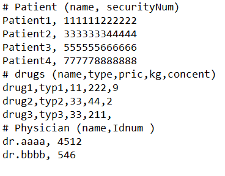

I want to read the text file and input data so that I can create the Patient class object from the input parameter. the Text file contains different lines & categories, the first few lines contain data for Patient class, the next few lines contain data for a drug class, the third category contains the physician data for physician class. as follows
"myFile.txt" is my file name and contain the following data 
So I want to read this file and input the data so that I can create an object of the respective class for Patient object, drug object, and physician object. I tried in the following way but I cannot split the category. my program code read all files and input into the patient object. so anyone's help is appreciated.
Note: I have already created classes Patient, Drug & Physician in other class files, I have no problem with creating classes. What I only want is to read data from this Text file main class and build the class object. So my problem is only how to read the Text file line by line based on the class parameters and extract data from it as input for my class objects.
here is my code
import java.util.Scanner;
import java.util.ArrayList;
import java.io.File;
import java.io.FileNotFoundException;
public class Lsystem{
static ArrayList<Patient> pList;
static ArrayList<Drug> dList;
static ArrayList<Physician> plist;
public static void main(String[] args) throws FileNotFoundException{
pList = new ArrayList<Patient>();
dList = new ArrayList<Drug>();
plist = new ArrayList<Physician>() ;
File dataFile = new File("myFile.txt");
Scanner inputData = null;
try {
inputData = new Scanner(dataFile);
}
catch(Exception e) {
System.out.println(e);
System.exit(1);
}
// skip first line
String[] line = inputData.nextLine().split(" ");
//read next lines
while( inputData.hasNextLine()) {
if(!(inputData.hasNext("# drugs "))){
line = inputData.nextLine().split(",");
String name = line[0];
String securityNum = line[1];
Patient newPatient = new Patient(name,securityNum);
pList.add(newPatient);
}
}
for(Patient pas:pList){
System.out.println(pas);
}
else if ((inputData.hasNext("# drugs")))
while( inputData.hasNextLine() && (!(inputData.hasNext("# Physician ")))) {
line = inputData.nextLine().split(",");
String name = line[0];
String type = line[1];
double price = Double.parseDouble(line[2]);
double kg = Double.parseDouble(line[3]);
int conc = Integer.valueOf(line[4]);
Drug newDrug = new Drug(name,type,price,kg,conc);
dList.add(newDrug);
}
for(Drug drg:dList){
System.out.println(drg);
}
// an so on for Physician data as well
// .......
}
}
| Have a look at the String class in the Javadocs. docs.oracle.com/javase/7/docs/api/java/lang/… docs.oracle.com/javase/7/docs/api/java/lang/… docs.oracle.com/javase/7/docs/api/java/lang/… and familiarise yourself with regex101.com That should give you all you need. - JGFMK 21 Mar 2020 at 21:09 |
hope this is what you need (it is dirty but...):
I am assuming that your text file is EXACTLY as the example below: (file -> text.txt)
# Patient (name, securityNum)
Patient1, 1234
Patient2, 456
# drugs (name, type,pric,kg,concent)
drug1, type1, 12,51,10
drug2, type2,22,42,56
# Physician (name, Idnum)
dr.aaaa, 1234
dr.bbbbb, 456
this is the main (you have to change thee text.txt file path):
import java.io.File;
import java.util.ArrayList;
import java.util.Arrays;
import java.util.List;
import java.util.Scanner;
public class MainTest {
public static void main(String[] args) throws Exception {
//set the path of your text file
File file = new File(MainTest.class.getClassLoader().getResource("text.txt").getFile());
Scanner myReader = new Scanner(file);
StringBuilder sb = new StringBuilder();
while (myReader.hasNextLine()) {
String tmp = myReader.nextLine();
sb.append(tmp + "\n");
}
myReader.close();
String[] type = sb.toString().split("#");
String patients = type[1];
String drugs = type[2];
String doctors = type[3];
patients = patients.replace("Patient (name, securityNum)\n","");
drugs = drugs.replace("drugs (name, type,pric,kg,concent)\n","");
doctors = doctors.replace("Physician (name, Idnum)\n","");
System.out.println("°°°°°°°°°°°°°°°°°°°°°°°°°°°");
populatePatientBean(patients).forEach( patient -> {
System.out.println("\nname " + patient.getName());
System.out.println("num " + patient.getSecurityNum());
});
populateDrugsBean(drugs).forEach( drugs_ -> {
System.out.println("\nname " + drugs_.getName());
System.out.println("type " + drugs_.getType());
System.out.println("concent " + drugs_.getConcent());
System.out.println("kg " + drugs_.getKg());
});
populatePhysicianBean(doctors).forEach( doctor -> {
System.out.println("\nname " + doctor.getName());
System.out.println("id " + doctor.getIdNum());
});
System.out.println("°°°°°°°°°°°°°°°°°°°°°°°°°°°");
}
public static List<Patient> populatePatientBean(String linePatient){
List<String> patientsTot = Arrays.asList(linePatient.split("\n"));
List<Patient> patientListReturn = new ArrayList<>();
patientsTot.forEach( line -> {
String[] arrayString = line.split(",");
Patient patient = new Patient(arrayString[0].trim(),arrayString[1].trim());
patientListReturn.add(patient);
});
return patientListReturn;
}
public static List<Drugs> populateDrugsBean(String lineDrugs){
List<String> drugsTot = Arrays.asList(lineDrugs.split("\n"));
List<Drugs> drugsListReturn = new ArrayList<>();
drugsTot.forEach( line -> {
String[] arrayString = line.split(",");
Drugs drugs = new Drugs(arrayString[0].trim(),arrayString[1].trim(),Float.valueOf(arrayString[2].trim()),Float.valueOf(arrayString[3].trim()),Float.valueOf(arrayString[4].trim()));
drugsListReturn.add(drugs);
});
return drugsListReturn;
}
public static List<Physician> populatePhysicianBean(String linePhysician){
List<String> physicianTot = Arrays.asList(linePhysician.split("\n"));
List<Physician> physicianListReturn = new ArrayList<>();
physicianTot.forEach( line -> {
String[] arrayString = line.split(",");
Physician physician = new Physician(arrayString[0].trim(),Long.valueOf(arrayString[1].trim()));
physicianListReturn.add(physician);
});
return physicianListReturn;
}}
below the beans....
public class Patient {
private String name;
private String securityNum;
public Patient(String name, String securityNum) {
this.name = name;
this.securityNum = securityNum;
}
public String getName() {
return name;
}
public void setName(String name) {
this.name = name;
}
public String getSecurityNum() {
return securityNum;
}
public void setSecurityNum(String securityNum) {
this.securityNum = securityNum;
}
}
public class Drugs {
private String name;
private String type;
private float kg;
private float concent;
private float pric;
public Drugs(String name, String type, float kg, float concent, float pric) {
this.name = name;
this.type = type;
this.kg = kg;
this.concent = concent;
this.pric = pric;
}
public String getName() {
return name;
}
public void setName(String name) {
this.name = name;
}
public String getType() {
return type;
}
public void setType(String type) {
this.type = type;
}
public float getKg() {
return kg;
}
public void setKg(float kg) {
this.kg = kg;
}
public float getConcent() {
return concent;
}
public void setConcent(float concent) {
this.concent = concent;
}
public float getPric() {
return pric;
}
public void setPric(float pric) {
this.pric = pric;
}
}
public class Physician {
private String name;
private long idNum;
public Physician(String name, long idNum) {
this.name = name;
this.idNum = idNum;
}
public String getName() {
return name;
}
public void setName(String name) {
this.name = name;
}
public long getIdNum() {
return idNum;
}
public void setIdNum(long idNum) {
this.idNum = idNum;
}
}
| Thanks for your response and the codes I appreciated. My problem is with reading the file, I have already created the class in separate files. what I want is to read the data from file based on the class parameter and use it in the main class as an input for building class objects. is there any easier way. although it works, your way is a little complicated. I want to read the text files using only File & scanner classes. not such a complicated way. help me in that way. - Sirway 22 Mar 2020 at 00:01 |
This uses File and Scanner to process the input file shown in the question. It assumes the file strictly follows the question's sample. For example, there must be three sections, with at least one record in each section. It also assumes there are no blank lines - not even at the end of the file.
In this sense, this solution is brittle, and is missing necessary error checking and validation code. Otherwise, it is a solution to the question.
See the code for additional comments.
The main point, based on your comments, is probably to look at the logic controlling how scanner.nextLine() is called.
import java.util.Scanner;
import java.io.File;
import java.io.FileNotFoundException;
import java.util.List;
import java.util.ArrayList;
public class ProcessDataFile {
// Our three lists for our three classes of object:
final List<Patient> patients = new ArrayList();
final List<Drug> drugs = new ArrayList();
final List<Physician> physicians = new ArrayList();
// The file scanner:
Scanner scanner;
// The currently processed line:
String line;
public void populateLists() throws FileNotFoundException {
File file = new File("C:/tmp/medical_data.txt");
scanner = new Scanner(file);
// process the file, one line at a time
while (scanner.hasNextLine()) {
line = scanner.nextLine();
processLine();
}
printResults();
}
// process each line in the file
private void processLine() {
if (line.startsWith("# Patient")) {
line = scanner.nextLine();
processPatients();
}
if (line.startsWith("# drug")) { // note the "d" in drug - not "D"!
line = scanner.nextLine();
processDrugs();
}
if (line.startsWith("# Physician")) {
line = scanner.nextLine();
processPhysicians();
}
}
private void processPatients() {
while (!line.startsWith("#")) {
String[] fields = line.split(",");
// TODO - add check to make sure 2 values are in the split string.
Patient patient = new Patient(
fields[0].trim(),
fields[1].trim());
patients.add(patient);
line = scanner.nextLine();
}
}
private void processDrugs() {
while (!line.startsWith("#")) {
String[] fields = line.split(",");
// TODO - add check to make sure 5 values are in the split string,
// and are of the expected data type:
Drug drug = new Drug(
fields[0].trim(),
fields[1].trim(),
Double.parseDouble(fields[2].trim()),
Double.parseDouble(fields[3].trim()),
Integer.parseInt(fields[4].trim()));
drugs.add(drug);
line = scanner.nextLine();
}
}
private void processPhysicians() {
while (!line.startsWith("#")) {
String[] fields = line.split(",");
// TODO - add check to make sure 2 values are in the split string,
// and are of the expected data type:
Physician physician = new Physician(
fields[0].trim(),
Long.parseLong(fields[1].trim()));
physicians.add(physician);
if (scanner.hasNextLine()) {
// this may be the end of the file already... this assumes
// that the physicians section is the final section.
line = scanner.nextLine();
} else {
return; // to avoid never exiting this method
}
}
}
private void printResults() {
patients.forEach((patient) -> {
System.out.println(patient.name + " : " + patient.securityNum);
});
// and the same for the other 2 beans...
}
}
This prints out the following:
Patient1 : 1234
Patient2 : 456
And it will print out the other 2 beans, if that missing code is added.
| the last method private void printResults() doesnot work, the rest is okay, and thank you. the error is System.out.println(patient.name + " : " + patient.securityNum) the variable name and securityNum cannot be found can you check if any from code or is there way to use for loop to print out for(Patient patient: patients) { System.out.println(patient) - Sirway 22 Mar 2020 at 03:11 | |
@Sirway - I created my own Patient class, with its own field names, but no getters or setters (because my code is just a demo for you). If you use the field names from your Patient class, or, more likely, the get methods you probably created, then you should be fine. It should be a small change for you to make. - andrewJames 22 Mar 2020 at 13:03 |
|
| Okay, I implemented get method in my class, I done that and javac compile perfectly but java does not output anything. there is no output I mean it doesn't print anything. - Sirway 22 Mar 2020 at 22:53 | |
| I recommend using a debugger - that should allow you to find the problem fairly quickly. If you are not sure where to start, then start here. Netbeans and Eclipse are two good choices - but there are also others. - andrewJames 23 Mar 2020 at 00:57 |
{kind=link}